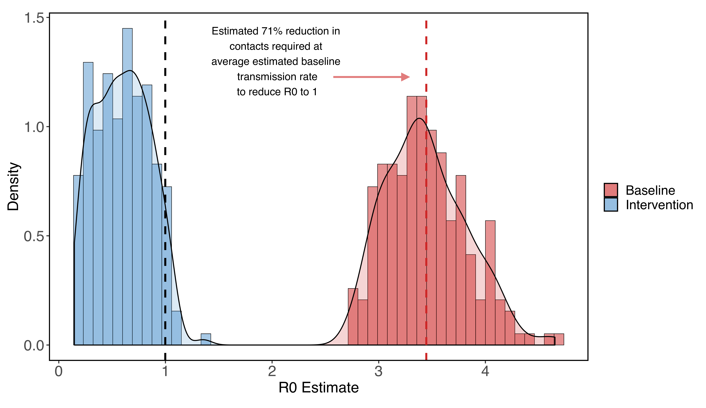
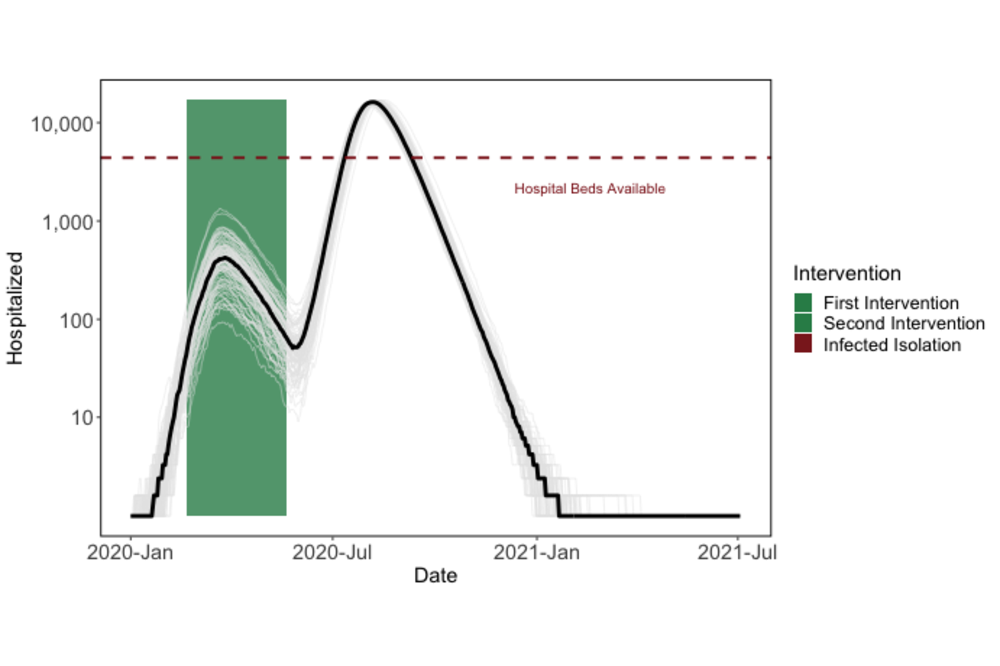

Potential Long-Term Intervention Strategies for COVID-19
A potential vaccine may take 12-18 months to be developed. What can we do to keep COVID-19 under control until then? We have developed a compartmental model of COVID-19 to evaluate possible outcomes of non-pharmaceutical interventions such as social distancing.
Take a look at our intro below, or skip directly to our interactive model or an overview of model details.
NEW: See our model predictions for Santa Clara County, California.
Team: Marissa Childs, Morgan Kain, Devin Kirk, Mallory Harris, Jacob Ritchie, Lisa Couper, Isabel Delwel, Nicole Nova, Erin Mordecai
Flatten the Curve
By now, you've probably already seen a diagram like this. One of the most important steps we can all take right now is to practice social distancing. One of the most powerful ways we can all slow down the spread of COVID-19 (or "flatten the curve") is to interact with fewer people. Here's a hypothetical scenario where a COVID-19 outbreak begins on Jan 15, and spreads for 50 days before we begin social distancing. We run 20 simulations and show the median value for each day.
Many of our health resources, like the number of doctors and nurses, have a fixed upper limit. If too many people get sick at once, we simply won't be able to take care of everyone. And that will mean making hard decisions about which patients to prioritize (for example, Santa Clara County has roughly 4500 hospital beds). Some people may not be able to receive care. We are already seeing this scenario play out in places like Italy. The more social distancing we practice, the flatter the curve will be, and the flatter the curve, the less likely we are to overwhelm our healthcare system.
Delay the Peak
Flattening the curve isn't the only benefit of social distancing. While some of our health resources have fixed limits, others will increase their capacities over time. We will be able to produce more resources like treatments, ventilators and hospital beds, for instance, but doing so takes weeks to months. (Exactly how much we can increase capacity is unclear. One possible scenario is pictured below). Practices like social distancing can help delay the time until the number of cases peaks. Social distancing buys us time so that we can prepare the resources we need to treat everyone who gets sick.
Keep it Flat
In places like South Korea and China, it seems like they've already gotten to the tail end of the curve. If we all stay inside for a couple of weeks, we can stop all of this social distancing once cases start to drop, right? Not quite.
If we lift controls too quickly, we could see a resurgence, where cases pick back up quickly. In fact, if we completely stop practicing social distancing at almost any point in this model, we risk an epidemic that overwhelms hospital capacity.
The Lightswitch Method
We will probably have to stay careful for a long time after it seems like COVID-19 is gone in order to keep it under control. The best way to eradicae it, a vaccine, is likely twelve to eighteen away. That doesn't mean we will necessarily need to stay in our houses the whole time, though.
Experts have shown that we can keep transmission relatively low and avoid overwhelming our healthcare capacity if we use a "lightswitch" approach. When we're "on", we go back to social distancing and cases start to decrease. When we're "off" we can dial down social distancing and make smaller adjustments. Cases will start to increase slowly, but won't grow out of control before we switch social distancing back on. We could make our switches last a certain amount of time (e.g., three weeks on, three weeks off); or tie them to certain thresholds based on data (e.g., "on" when we pass 15 hospitalized cases in a week, "off" when we are below 2 hospitalized cases in a week).
This way, we can balance stopping the spread of COVID-19 and living our normal lives.
This is an incredibly stressful and scary time for people around the world. There's a lot of uncertainty, but scientists, medical professionals, and leaders across industries are working together to help us find solutions. If we make decisions based on the best models we have, we can both minimize the impact to our lives and our economy and still protect the most vulnerable among us.
If you'd like, you can play around with our model more here. Test how interventions change based on start date and adding in quarantining of symptomatic people.
Overview
We develop a compartmental model of COVID-19 to evaluate control efforts through non-pharmaceutical interventions. Currently, with this model we are aiming to illustrate possible trajectories under different hypothetical scenarios rather than trying to match exact dynamics of a location. We have turned the model into an interactive app to allow viewers to choose interventions over different time periods to consider the impact of the onset and duration of those interventions as well as the potential for resurgence after control measures are lifted.
Model Structure
Our model explicitly tracks nine compartments, including exposed, asymptomatic, presymptomatic, symptomatic, hospitalized, and recovered. We assume that all individuals who are exposed go through an incubation period. A portion of those who then become infectious remain asymptomatic for the entire infection (Ia) while individuals who go on to become symptomatic first go through a pre-symptomatic but infectious state (Ip). Those who show symptoms are further divided between those with mild symptoms (Im) and severe symptoms (Is) who require hospitalization. We assume that after admission to the hospital, no onward transmission occurs. The model is implemented in R with the package "pomp" using a stochastic simulator where the movements between compartments are multinomially distributed based on transition rates.

Implementation of Interventions
Crucially, our modeling framework allows for different types, intensities, and durations of interventions to be implemented, and thereby illustrates how these interventions impact dynamics and resultant number of COVID-19 cases and fatalities through time. We currently consider 3 possible interventions that are can be implemented at different times during the simulation:
- social distancing for a set duration (applied as a scaling of the transmission rate for all infected individuals)
- social distancing triggered by the number of hospitalized individuals crossing a threshold (applied as above)
- isolation of symptomatic individuals (applied as a scaling of the transmission rate for only symptomatic individuals Is and Im)
In the future, we are considering additional interventions and scenarios including contact tracing with efficacy dependent on the testing capacity, fatality and hospitalization rates dependent on the age structure of a population, and fatality rates further dependent on hospital capacities.
Parameters used in Introduction
The effects of these parameters are heavily dependent on the transmission rate, which varies from region to region. Additionally, for short-term interventions to be effective, much higher levels of social distancing will likely be required.
| Level | Proportion of baseline contact rate |
|---|---|
| Light social distancing | 60% |
| Medium social distancing |
50% |
| Strong social distancing |
40% |
| Extreme social distancing |
25% |
Source Code
All code for the model is available on Github: https://github.com/morgankain/COVID_interventions.
Hospitalization Estimates for Santa Clara County/h4>
We estimate baseline transmission rate (beta0 in our model) and R0 for Santa Clara County, California, using local parameter values when possible, with the R package pomp (King et al. 2020). See "detailed methods" below for more information. This gives us a sense of how the virus would spread if we took no action.
Generally, we attempt to capture the non-pharmaceutical interventions that have already happened in Santa Clara County. In early March, people began to change their behavior in response to the virus (for example, working from home, cancelling large social events). On March 17th, a shelter-in-place order began for the entire Bay Area.
Incorporating uncertainty in some parameters specific to the outbreak in Santa Clara County (but far from all of them), we estimate a median baseline transmission rate of 0.54 (0.43 - 0.70; 95% CI), which translates into an R0 of 3.49 (2.82 - 4.60; 95% CI). Using these estimates for beta0, we find reducing the contact rate for the whole population by 72% (64% - 78%, 95% CI) brings R0 below one, a basic threshold for getting transmission under control.
Figure 1: R0 estimates for Santa Clara county assuming no social distancing (red) and very strong social distancing (shelter-in-place) that reduces contacts to 5%-30% of baseline (blue). We find that at the median estimated R0, a 72% reduction in contacts among all residents reduces the R0 to one.
The contact rates we give should not be taken as exact guidelines at the personal level because we assume that all contacts have the same likelihood of transmission, which probably isn’t true (for example, people may be more likely to infect other people in their household compared to people they encounter at the grocery store). All of our estimates also assume that no infected individuals enter the county from other areas at any point in the study.
We note that with even strong social distancing (e.g at least 72% reduction in normal contacts), the epidemic will take a long time to end because of lags due to both intervention implementation and the duration of individual infections. Additionally, given that many interventions may bring R0 just below one, cases decrease at a low rate because of the abundance of currently circulating cases and the long duration of individual COVID-19 infections.
Because of this, if a strong intervention is lifted too early, we still expect to see a second epidemic (although cases and hospitalizations may be reduced).
Figure 2: Premature termination of shelter-in-place will lead to a second epidemic peak.
Given the required duration of shelter-in-place (e.g. around five months) to reduce cases to zero), we are exploring other intervention options that would help our community return to a semblance of normal life, while keeping cases under control. One example is the "light-switch" method shown on the Introduction page. An alternative is to weaken social distancing to a contact reduction rate of ~30% after some time (e.g. 60 days), while implementing strong symptomatic case isolation. Our model simulations show that this intervention strategy could be a promising alternative to 5+ months of strong social distancing.
Figure 3: Shifting from strong shelter-in-place to less stringent social distancing after 60 days, given the addition of strong case isolation, prevents the hospital system from getting overwhelmed. The virus will continue to spread at low levels for over a year.
That being said, across a broad parameter set for the strength and duration of the shelter in place order in Santa Clara County, we find that shifting to social distancing while also implementing infected isolation reduces hospitalizations and deaths compared to even long-term shelter-in-place (Figure 4). We emphasize the qualitative patterns here of decreasing maximum hospitalizations and deaths, and note that because this strategy prolongs the epidemic, we still estimate thousands of people dying under this intervention. We are actively working to find a feasible intervention that leads to far fewer hospitalizations and deaths.
Figure 4: Simulations across parameter values for the duration and strength of shelter-in-place among other parameter values (see "detailed methods" below). Circles show estimates for shelter-in-place only. Triangles show scenarios where shelter-in-place is reduced to weaker social distancing (60%-90% of baseline contacts on day 60 of shelter-in-place -- May 16), while also implementing strong symptomatic case isolation (<5% of contacts). The simulations for triangles assumes this weak social distancing extends until the end of the simulation. Strong symptomatic case isolation with an extended period of weak social distancing reduces maximum simultaneous hospitalizations and total deaths, but in many cases extends the epidemic in time despite stopping a second large peak.
Promisingly, with an increase in testing, it may be possible to begin contact tracing (in other words, notify people who have been exposed to a detected case and isolate potentially infected people) which will also remove potential future infected individuals. Contact tracing will lead to a more successful intervention than is pictured in Figure 3, which only includes the isolation of symptomatic individuals, as it can allow for the isolation of "silent spreaders" who are pre-symptomatic or asymptomatic.
Detailed methods
To estimate beta0, we fit our model (see model details) to observed deaths in Santa Clara County across a range of possible parameter values for some parameters, while fixing many others. Our procedure was as follows:
-
Establish ranges of parameter values for some unknown parameters for exact parameter values see Table 1 below), while taking the rest as fixed:
- Start date of the more relaxed, suggested "work from home" initiative
- Proportional reduction in contacts from the "work from home" initiative
- Proportional reduction in contacts from shelter-in-place
- Length of shelter-in-place
- Start date of the epidemic
- Number of initial infections that began the epidemic
- Draw three hundred sobol sequences from these ranges
- For each parameter set estimate beta0 with pomp (function mif2), fit to recorded daily deaths
- Simulate 200 epidemics from day 0 with the fitted beta0 (without uncertainty in the estimate of beta0 for now), and the parameters used to fit beta0
-
Calculate the summary statistics for this run (which lead to a single data point in Figure 4)
- We calculate R0 using estimated transmission rate (beta0) times the duration of an average infection as defined by our model strucure
- We note that we assume a closed population; under the realistic assumption of regularly imported cases, an even more effective high magnitude of social distancing will be needed.
We use data from The New York Times, based on reports from state and local health agencies. These data are available at https://github.com/nytimes/covid-19-data. Daily deaths are calculated from differences in cumulative death reports.
Figure 5: Example showing simulation with 95% confidence interval (grey) from fitted model compared to data (red).
| Uncertain Parameters | Lower bound | Upper bound |
|---|---|---|
| Work from home start date | 01-Mar | 10-Mar |
| Work from home proportional decrease in contacts | 0.6 | 0.9 |
| Proportional reduction in contacts from shelter in place | 0.05 | 0.3 |
| Length of shelter-in-place | 60 | 200 |
| Start date of the epidemic | 15-Jan | 29-Jan |
| Number of initial infections that began the epidemic | 1 | 10 |
| Fixed Parameters | Value |
|---|---|
| Relative infectiousness of asymptomatic infected individuals | 2/3 |
| Proportion of infections that are asymptomatic | 1/3 |
| Portion of symptomatic infections that require hospitalization | 4.40% |
| Incubation period | 5.2 days |
| Presymptomatic duration | 2 days |
| Infectious period for asymptomatic infections | 7 days |
| Time from symptom onset to hospitalizations (severe cases) | 5.76 days |
| Time from symptom onset to recovery (mild cases) | 7 days |
| Fatality rate among hospitalizations | 1/5 |
| Time from hospitalization to recovery | 14.5 days |
| Population | 1,938,000 |
King AA, Ionides EL, Breto CM, Ellner SP, Ferrari MJ, Kendall BE, Lavine M, Nguyen D, Reuman DC, Wearing H, Wood SN (2020). pomp: Statistical Inference for Partially Observed Markov Processes. R package, version 2.7, https://kingaa.github.io/pomp/.
We are grateful for the MIDAS network for providing data, code, and inspiration for this project.
Funding was provided by the National Science Foundation (DEB-1518681), the National Institute of General Medical Sciences (1R35GM133439-01), the Natural Capital Project, the Helman Scholarship, and the Terman Award.
Erin Mordecai is an Assistant Professor of Biology at Stanford, a Center Fellow, by courtesy, at the Woods Institute for the Environment, a member of Bio-X, a Faculty Fellow in the Center for Innovation in Global Health, and a Faculty Fellow in the King Center for Global Development. Marissa Childs was supported by the llich-Sadowsky Fellowship through the Stanford Interdisciplinary Graduate Fellowship (SIGF) program at Stanford University. Morgan Kain was supported by the Natural Capital Project. Nicole Nova was supported by the Stanford Data Science Scholarship. Jacob Ritchie was supported by The Terry Winograd Fellowship. Mallory Harris was supported by the Knight-Hennessy Scholarship.